Sobre o site
O objetivo deste projeto é explicar e demonstrar a construção de um decodificador para display de 7 segmentos utilizando portas lógicas discretas e a ferramenta de mapa de Karnaugh para simplificação das expressões booleanas.
O trabalho foi desenvolvido em etapas, envolvendo estudo teórico, elaboração dos mapas de Karnaugh, simulações no TinkerCAD e experimentação prática com o kit didático do laboratório.
Nas sessões iniciais do laboratório foi estudado o funcionamento físico dos displays de 7 segmentos, analisando como cada segmento (identificados de a até g) é acionado para formar os numerais de 0 a F.
Também foram abordadas as diferenças entre displays de cátodo comum e ânodo comum, destacando como essa escolha influencia o nível lógico necessário para o acionamento dos segmentos.
Além do decodificador de 7 segmentos, o grupo realizou atividades complementares durante as práticas de laboratório, incluindo:
- Experimentos com comparadores digitais de 1 bit e 4 bits, utilizando portas lógicas e o CI 74LS85;
- Implementação de circuitos aritméticos, como meio somador e meio subtrator;
- Desenvolvimento de projetos de circuitos combinacionais com tabelas verdade, mapas de Karnaugh e simulações.
As seções seguintes do site detalham cada uma dessas atividades, apresentando explicações teóricas, imagens dos experimentos e resultados obtidos em laboratório.
Teoria detalhada
Display de 7 segmentos — anatomia e pinagem
O display de 7 segmentos é formado por sete LEDs em formato de barras (segmentos a–g) e, em muitos modelos, um ponto decimal (DP). Existem dois tipos básicos: cátodo comum e ânodo comum.
A escolha do tipo determina como os drivers ou decodificadores deverão acionar os segmentos, podendo a saída ser ativa em nível lógico alto ou baixo.
Pinagem: varia de acordo com o modelo do display utilizado. No laboratório foram usados componentes compatíveis com o ambiente do TinkerCAD e com o kit didático.
Mapas de Karnaugh e simplificação
Para cada segmento do display foi construído um mapa de Karnaugh 4x4, considerando as entradas A, B, C e D (código BCD).
O objetivo dos mapas é reduzir o número de termos das expressões booleanas, tornando o circuito mais simples e eficiente.
Portas lógicas utilizadas
As principais portas lógicas utilizadas no projeto foram:
- AND – responsável pela multiplicação lógica;
- OR – responsável pela soma lógica;
- NOT – utilizada para inversão de níveis lógicos.
Tabela Verdade – Decodificador BCD para Display de 7 Segmentos
A tabela verdade abaixo relaciona as entradas binárias BCD (A, B, C e D) com o acionamento dos segmentos (a até g) do display de 7 segmentos cátodo comum, permitindo a exibição dos numerais de 0 a 9.
Fonte: https://blogdoteta.wordpress.com/2009/07/18/exercicio-2-de-eletronica-digital-decodificador-para-display-7-segmentos-post-do-leitor/
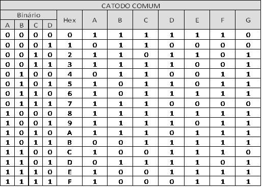Mapas de Karnaugh – Segmentos do Display
Para cada segmento do display de 7 segmentos foi elaborado um mapa de Karnaugh 4x4, considerando as entradas A, B, C e D. A partir desses mapas, foram obtidas expressões booleanas simplificadas.
Segmento A
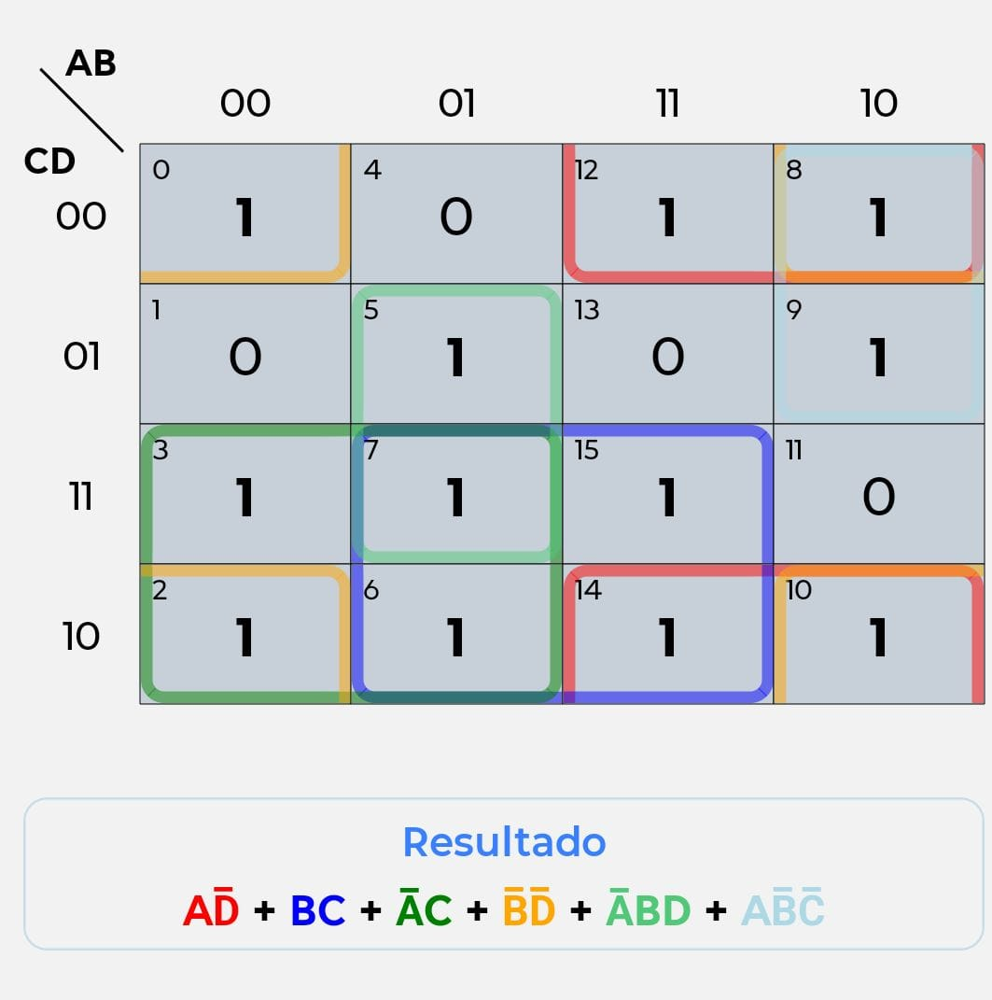Segmento B

Segmento C
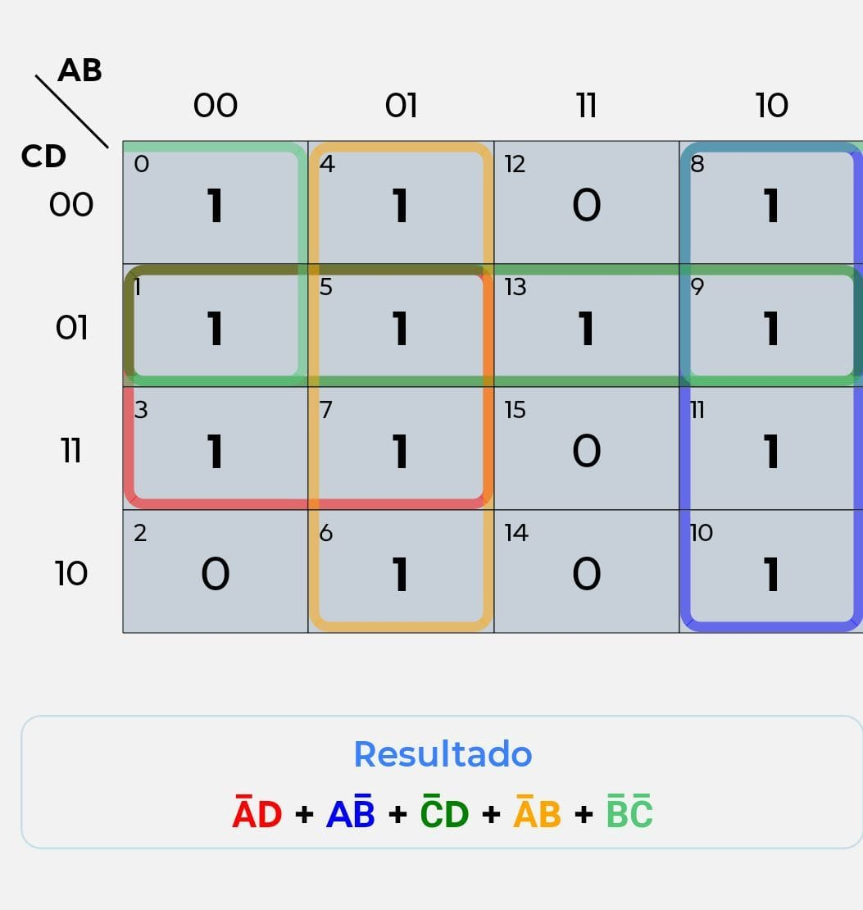Segmento D

Segmento E
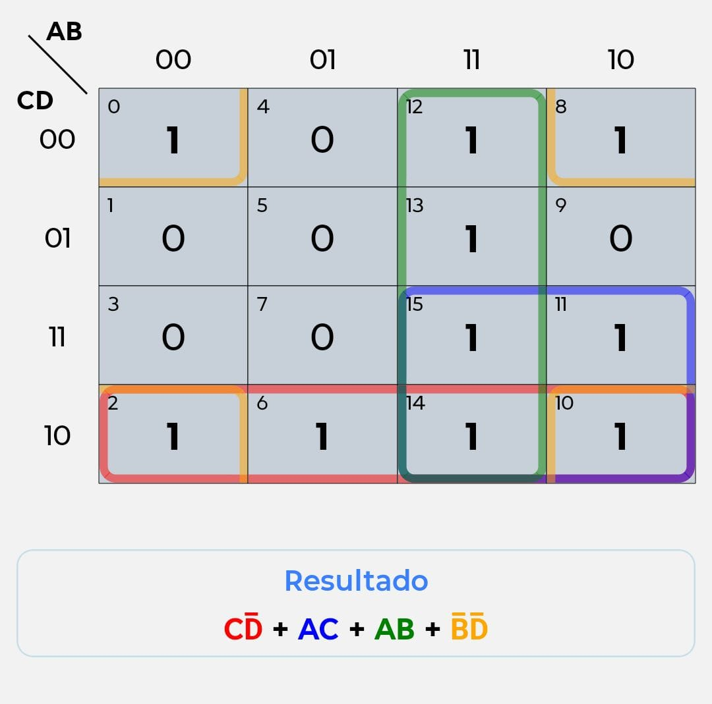Segmento F

Segmento G
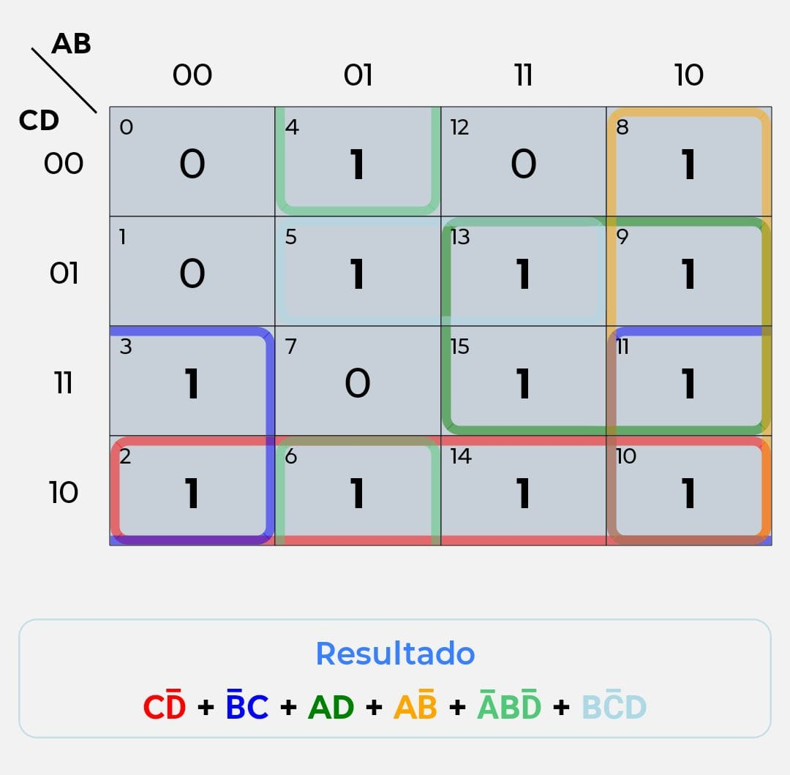Circuitos Lógicos dos Segmentos
A partir das expressões booleanas obtidas pelos mapas de Karnaugh, foram implementados os circuitos lógicos de cada segmento utilizando portas AND, OR e NOT.
Circuito do Segmento A
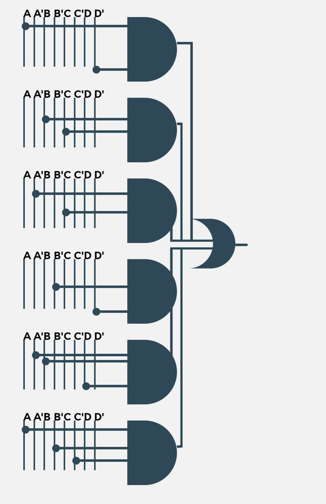Circuito do Segmento B
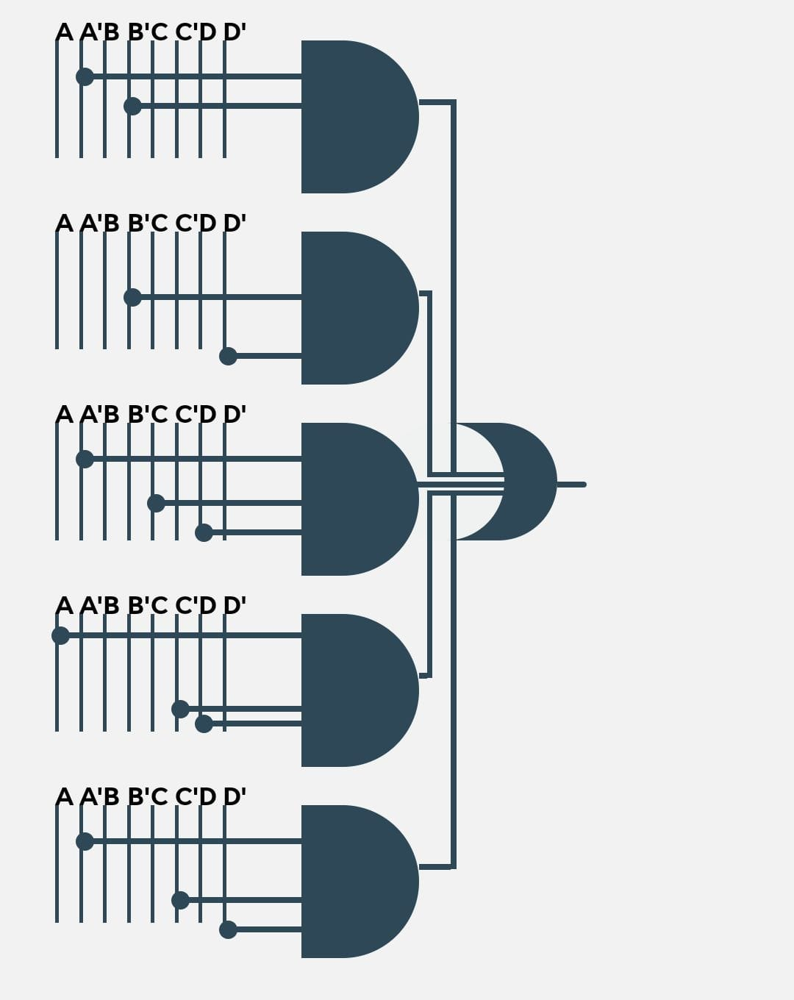Circuito do Segmento C
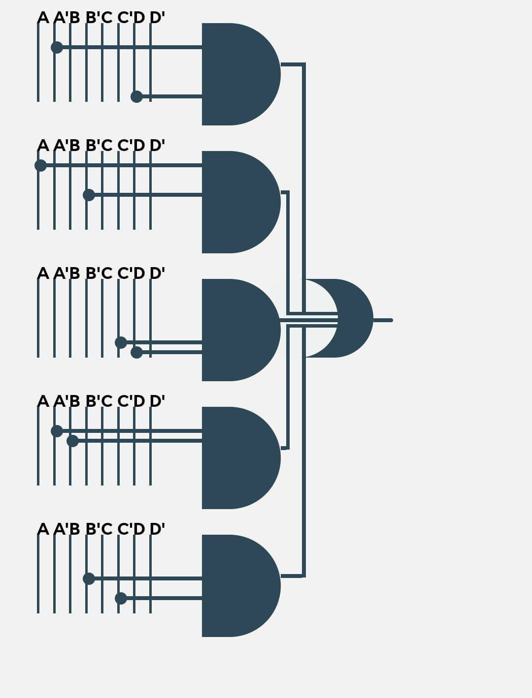Circuito do Segmento D
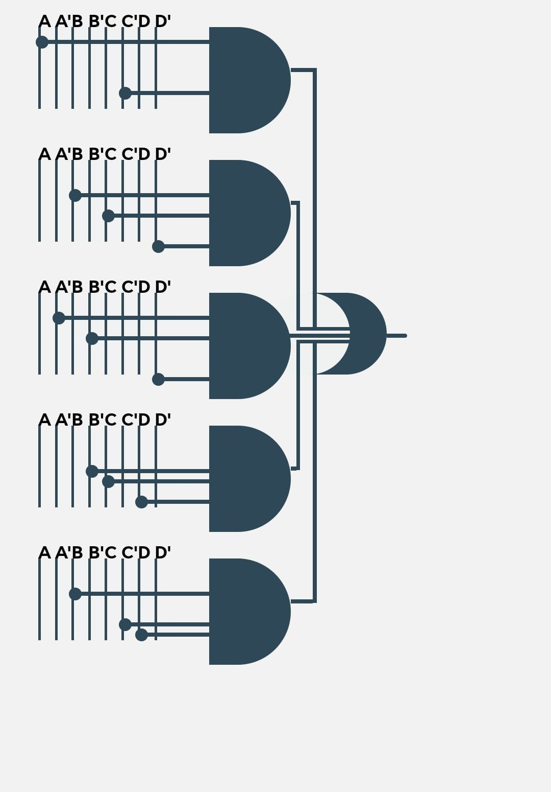Circuito do Segmento E
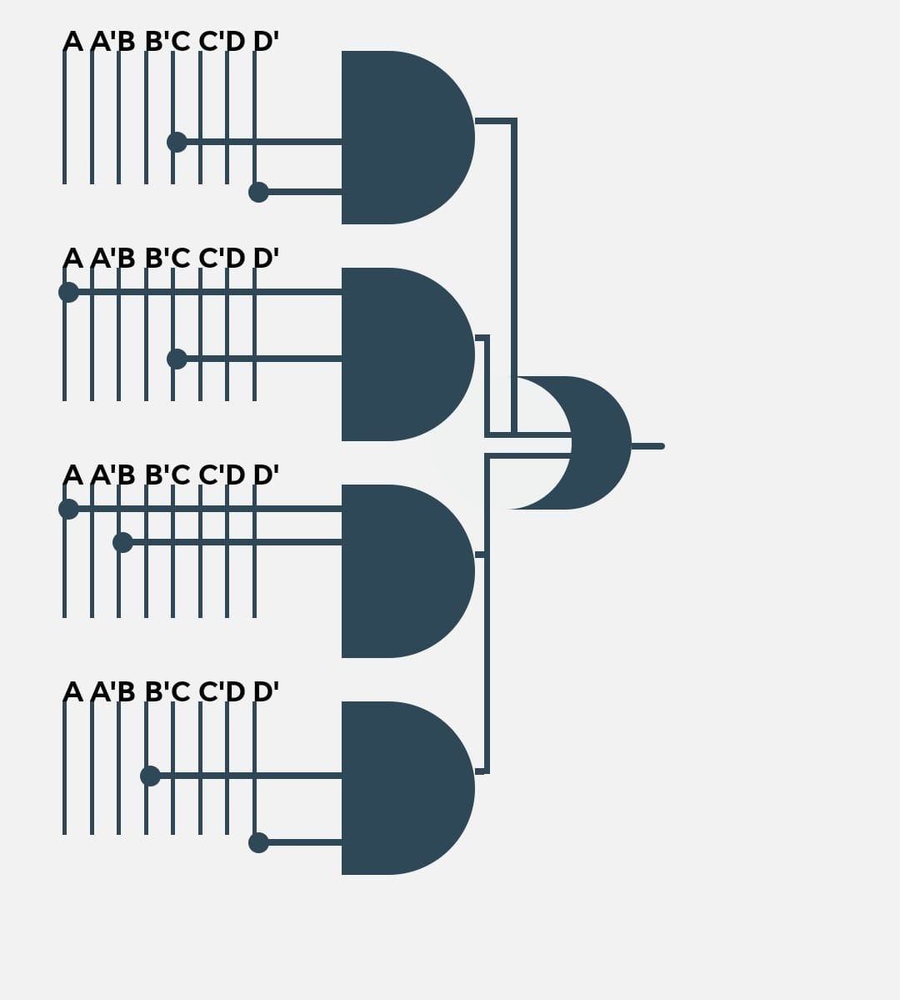Circuito do Segmento F
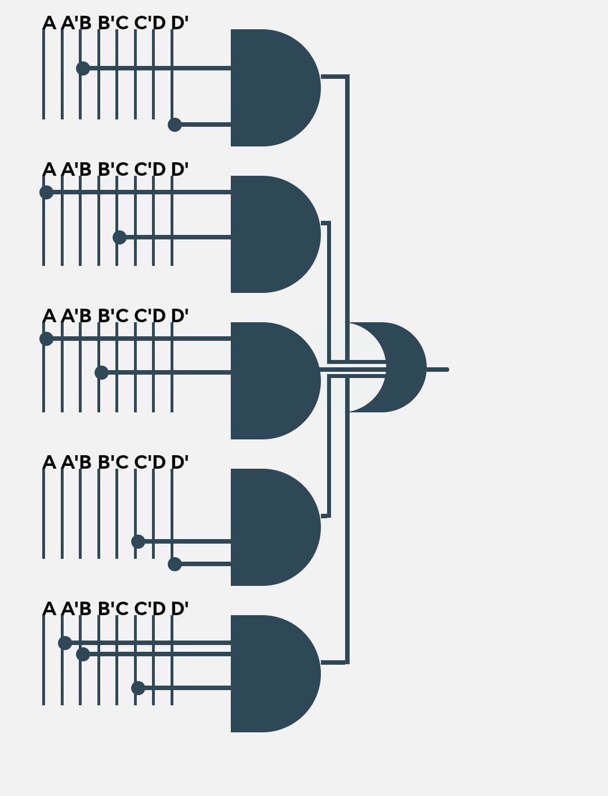Circuito do Segmento G
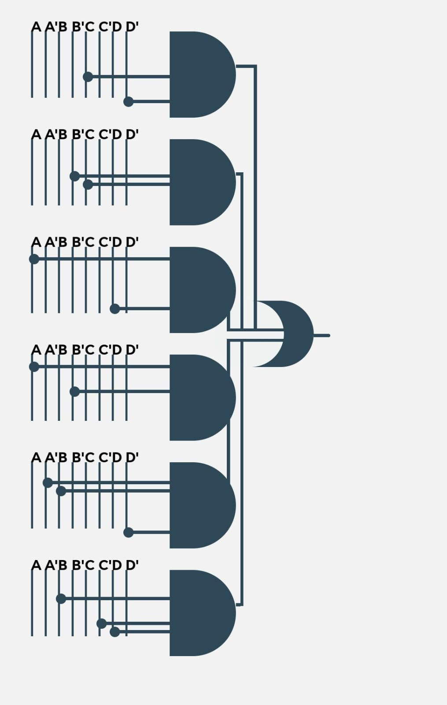Nos experimentos com comparadores digitais também foram utilizados circuitos integrados da família TTL, como o 74LS00, 74LS04 e o 74LS85.
Relatório – Comparadores Digitais (Experiências 22 a 28)
1. Objetivo
Estudar e verificar o funcionamento de comparadores digitais de magnitude, tanto em nível de 1 bit (com portas básicas) quanto em comparação de palavras de 4 bits usando o CI 74LS85.
2. Materiais
- Módulo MPLD10-EX (Zilocchi)
- 74LS00 (NAND)
- 74LS04 / 74LS14 (Inversores)
- 74LS85 (Comparador de magnitude 4 bits)
- LEDs indicadores, jumpers, protoboard (quando aplicável)
3. Desenvolvimento — Parte A: Comparadores de 1 bit
Foram montados e testados os seguintes circuitos básicos com duas entradas (A e B):
Exp. 22 — Comparador A > B
Lógica: saída = 1 somente quando A=1 e B=0.
Implementação: S = A · ¬B (pode ser implementado com NAND + inversores ou diretamente com portas AND + NOT dependendo do kit).
Resultado observado: LED indicador acendeu apenas na combinação A=1 / B=0, conforme previsto.
Exp. 23 — Comparador A ≥ B
Lógica: saída = 1 se A>B ou A=B;
Implementação e observações: circuito montado e tabelas preenchidas manualmente; LED permaneceu apagado apenas em A=0,B=1.
Exp. 24 — Comparador A < B
Lógica: saída = 1 somente quando A=0 e B=1.
Resultado observado: behavior conforme teoria; LED aceso apenas em 0/1.
Exp. 25 — Comparador A ≤ B
Lógica: saída = 1 quando A < B ou A = B.
Observação: LED apagou apenas em A=1,B=0; nos demais casos permaneceu aceso.
Exp. 26 — Desigualdade A ≠ B (XOR)
Lógica: saída = 1 para combinações 0/1 e 1/0; corresponde a uma porta XOR.
Observação prática: implementado com combinações de NANDs/inversores no módulo e verificado conforme tabela.
Exp. 27 — Igualdade A = B (XNOR)
Lógica: saída = 1 quando A e B iguais (0/0 ou 1/1); corresponde à função XNOR.
Observação prática: LED indicador confirmou níveis esperados.
4. Desenvolvimento — Parte B: Comparador de 4 bits (74LS85)
Utilizou-se o CI 74LS85 para comparar duas palavras de 4 bits: A_3..A_0 e B_3..B_0. O CI fornece três saídas: A<B, A=B e A>B (normalmente indicadas por LEDs L2, L1, L0).
Configuração prática:
- Ligar alimentação adequada ao módulo e aos CIs (observar pinos Vcc e GND no datasheet).
- Conectar as linhas A3..A0 e B3..B0 aos pontos de entrada do módulo (usar jumpers e chaves se disponível).
- Adicionar LEDs indicadores nas saídas do 74LS85 com resistores limitadores (~330Ω).
- Testar combinações extremas (0000 vs 0000; 1111 vs 0000; 0000 vs 1111) e preencher tabela de resultados.
Resultados resumidos (exemplos):
- 15 vs 15 → A=B → LED de igualdade aceso.
- 15 vs 0 → A>B → LED de A>B aceso.
- 0 vs 15 → A<B → LED de A<B aceso.
Observações: o 74LS85 facilita comparação de palavras sem a necessidade de montar redes de portas discretas; no entanto compreender as portas básicas ajuda a entender o comportamento interno do CI.
Circuitos Aritméticos – Meio Somador e Meio Subtrator
Nesta parte do estudo foram analisados dois circuitos aritméticos fundamentais apresentados no módulo Datapool 8810: o Meio Somador e o Meio Subtrator. Esses circuitos são essenciais para entender a lógica das operações matemáticas realizadas dentro dos sistemas digitais e compõem a base das unidades aritméticas e lógicas (ALU).
1. Meio Somador (Half Adder)
O meio somador realiza a soma de dois bits de entrada, A e B, e fornece duas saídas:
- S – Soma (bit menos significativo);
- C – Carry, indicando um possível transporte para a próxima posição binária.
As expressões lógicas fornecidas são:
- S = A ⊕ B
- C = A · B
Essas equações evidenciam como o circuito implementa a soma binária de forma combinacional.
2. Meio Subtrator (Half Subtractor)
O meio subtrator realiza a subtração entre dois bits, A e B, produzindo duas saídas:
- S – Diferença entre A e B;
- C – Borrow, que indica quando A precisou “pedir emprestado”.
Assim como o meio somador, esse circuito é fundamental para compreender a implementação da subtração binária dentro das arquiteturas digitais.
Projeto Combinacional — Questão Teórica
Enunciado do Projeto
1 Uma indústria possui quatro (04) máquinas de alta potência (M1, M2, M3, M4), podendo ser ligadas, no máximo, duas (02) delas simultaneamente.
Para uma melhor eficiência do sistema industrial é fundamental respeitar a seguinte prioridade de funcionamento:
- M1 tem prioridade sobre M2;
- M2 tem prioridade sobre M3;
- M3 tem prioridade sobre M4.
Para auxiliar no monitoramento da equipe de produção, faz-se necessário um painel equipado com dois (02) displays de 7 segmentos para indicar as duas máquinas que estão em produção no momento, ou indicar 0 (zero) quando o sistema estiver parado.
A empresa COELN-I contratou um técnico em Eletrônica para elaborar, implementar e instalar o projeto de um circuito lógico responsável por realizar este controle e sinalização no painel.
Para o desenvolvimento do projeto, pede-se:
- O diagrama de blocos representando o entendimento do sistema;
- Tabelas verdade necessárias para implementação;
- Expressões Booleanas;
- Mapas K;
- Simulações;
- Implementação com circuitos integrados.
 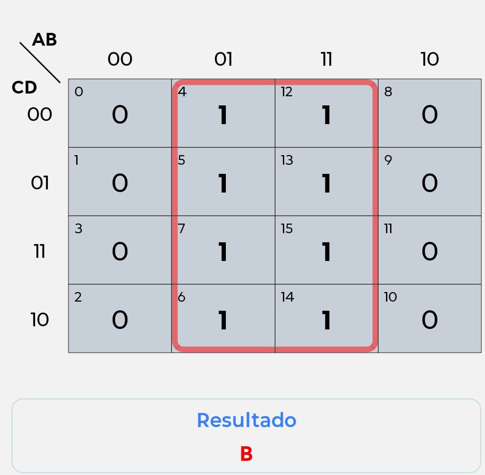
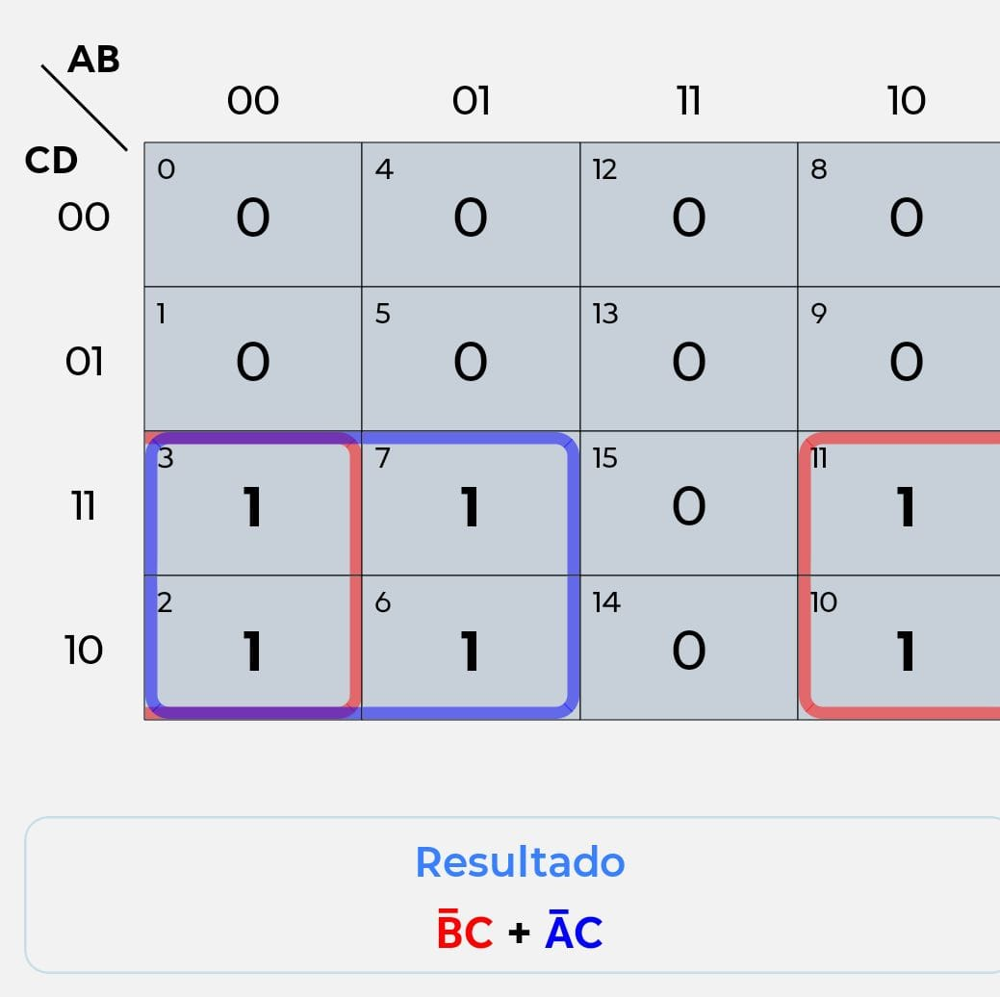
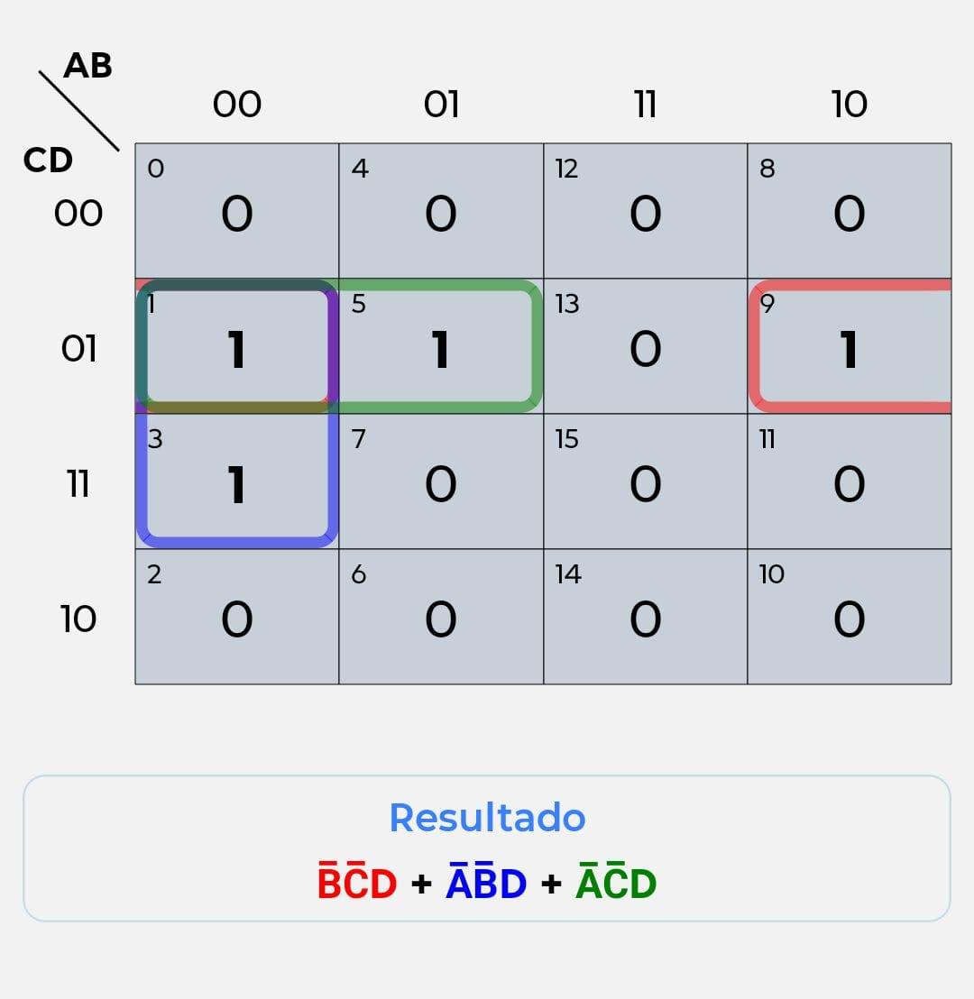
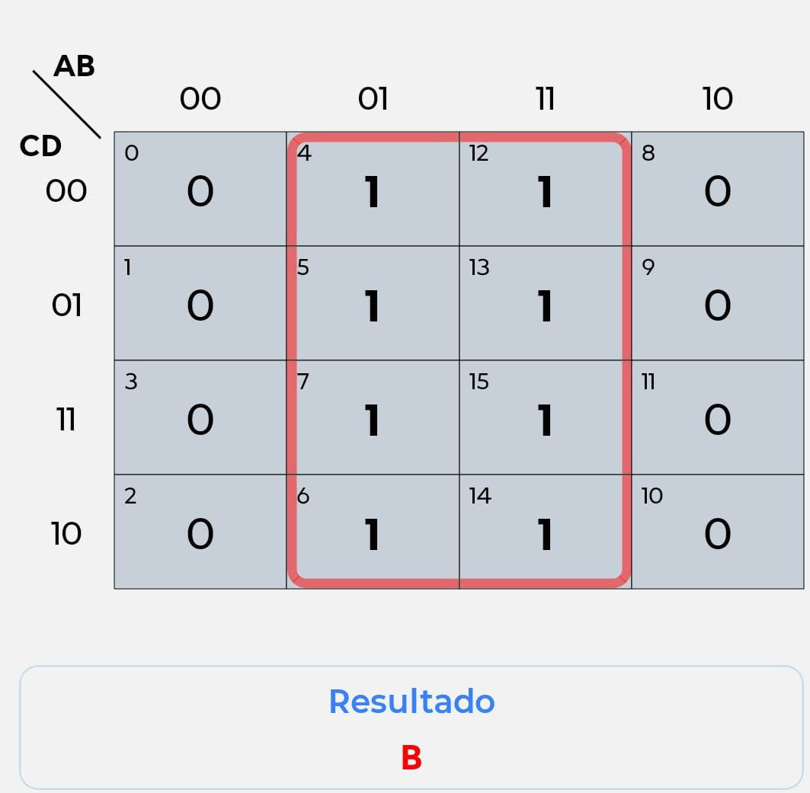
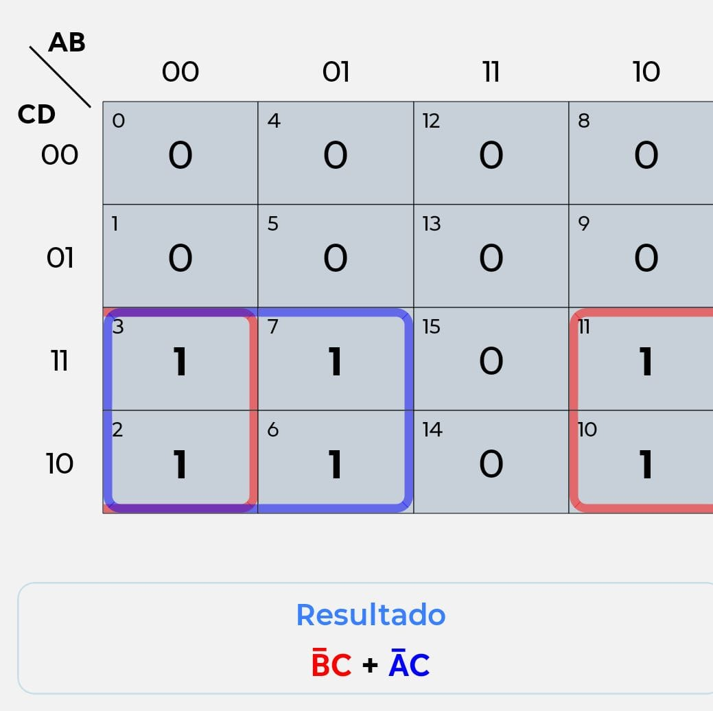
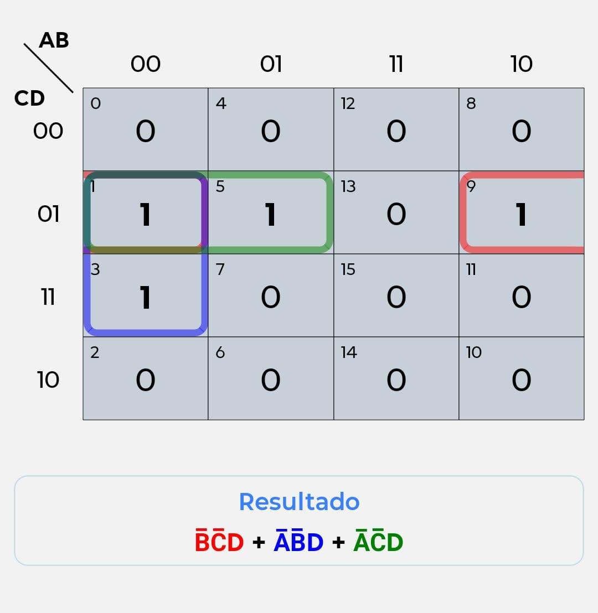
Questão 2 – Projeto de Circuito Combinacional
Enunciado da Questão
Em kits digitais para ensino e aprendizagem em bancadas de laboratórios, é comum encontrar alguns instrumentos de medição, entre eles a "ponta de prova" lógica. A COELN-I contratou uma equipe de técnico em Eletrônica para elaborar uma ponta de prova apresentada na figura abaixo, que corresponde praticamente ao diagrama de blocos do sistema.
A partir do diagrama dado, elaborar:
- Tabela verdade;
- Expressões lógicas;
- Mapas K;
- Simulações.
Diagrama do Sistema
Aqui será inserido o diagrama lógico da questão.
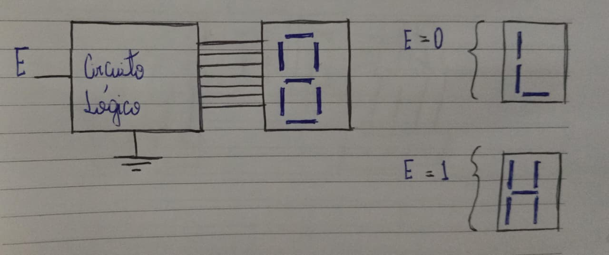Tabela Verdade e Expressões Lógicas
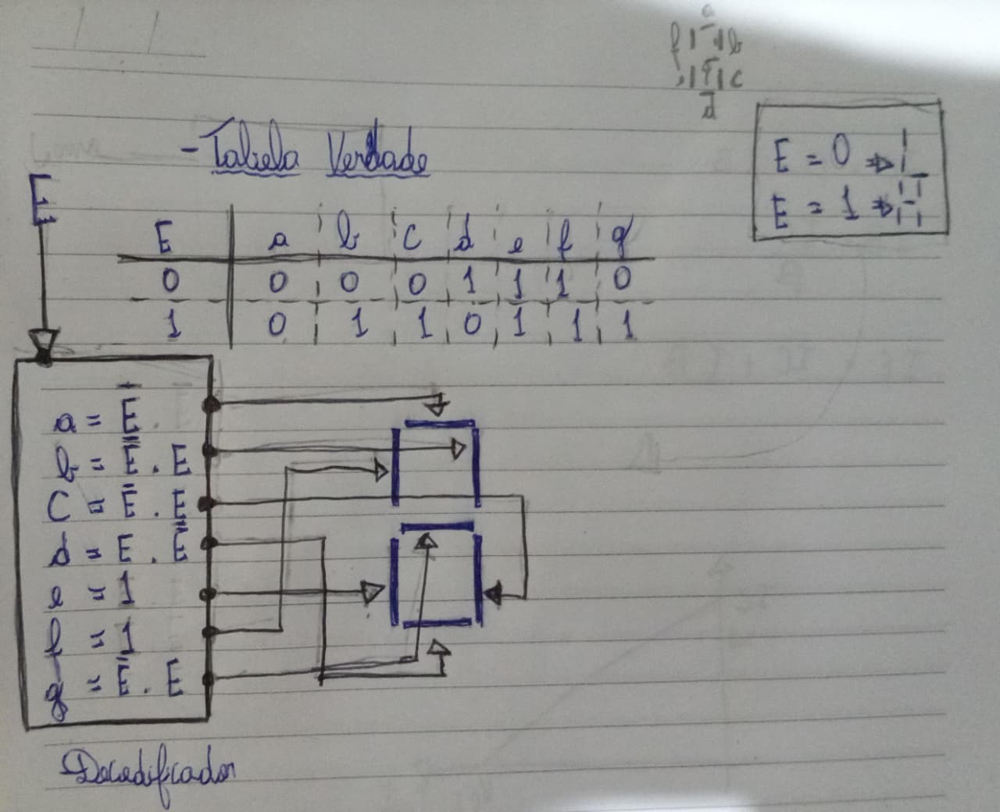Questão 3 – Projeto de Decodificador para IHM
Enunciado da Questão
Um técnico projetou um sistema digital com tecnologia CMOS para controlar a temperatura de uma estufa. O acionamento do sistema é feito via teclado, o qual possui as seguintes teclas de funções:
- Tecla 1 → Bloquear o sistema de aquecimento
- Tecla 2 → Aumentar a temperatura
- Tecla 3 → Diminuir a temperatura
- Tecla 4 → Estabilizar a temperatura
Como os operadores estavam reclamando que o sistema não possuía um sinalizador de função, um estagiário de Eletrônica propôs a seguinte solução:
Projetar um subsistema de IHM (Interface Homem–Máquina), que consiste em desenvolver um decodificador para um display de 7 segmentos cátodo comum, para indicar qual operação está sendo executada através dos seguintes sinais:
- Tecla 1 → Bloquear o sistema de aquecimento → b
- Tecla 2 → Aumentar a temperatura → A
- Tecla 3 → Diminuir a temperatura → d
- Tecla 4 → Estabilizar a temperatura → E
Observação: Quando uma tecla é acionada, ela permanece ativada até que outra tecla seja pressionada.
Resolução da Questão
A imagem abaixo corresponde ao desenvolvimento da tabela verdade, expressões lógicas e estrutura do decodificador para exibir as letras b, A, d, E no display de 7 segmentos.
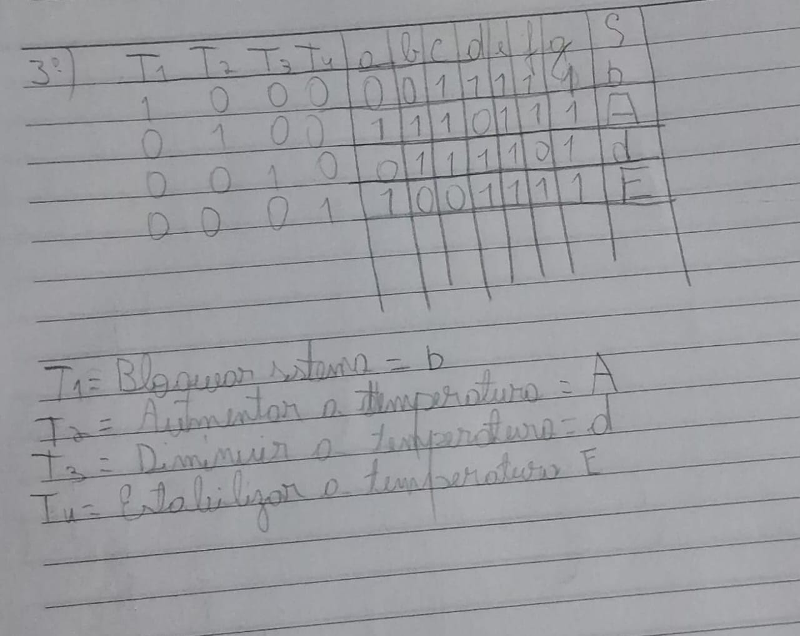Galeria e materiais visuais


Metodologia
As atividades foram divididas em:
- Decodificador de 7 segmentos
- Comparadores Digitais
- Circuitos Aritméticos
- Projetos De Circuitos Combinacionais
Passo a passo
Decodificador de 7 segmentos
- Identificar tipo de display
- Gerar tabela verdade
- Montar mapas de Karnaugh
- Implementar funções
Comparadores digitais
- Experimentar portas NAND, NOT
- Testar 74LS85
- Preencher tabelas verdade
Projeto combinacional
- Interpretar a tabela verdade
- Montar K-maps
- Simplificar funções
Circuitos Aritméticos – Meio Somador e Meio Subtrator
- Estudar as funções lógicas de Soma (S) e Carry (C)
- Montar a tabela verdade do meio somador
- Obter as expressões: S = A ⊕ B e C = A · B
- Analisar o diagrama do meio somador com portas XOR e AND
- Repetir para o meio subtrator com funções: S = A ⊕ B e C = A' · B
- Comparar os circuitos e identificar diferenças entre Carry e Borrow